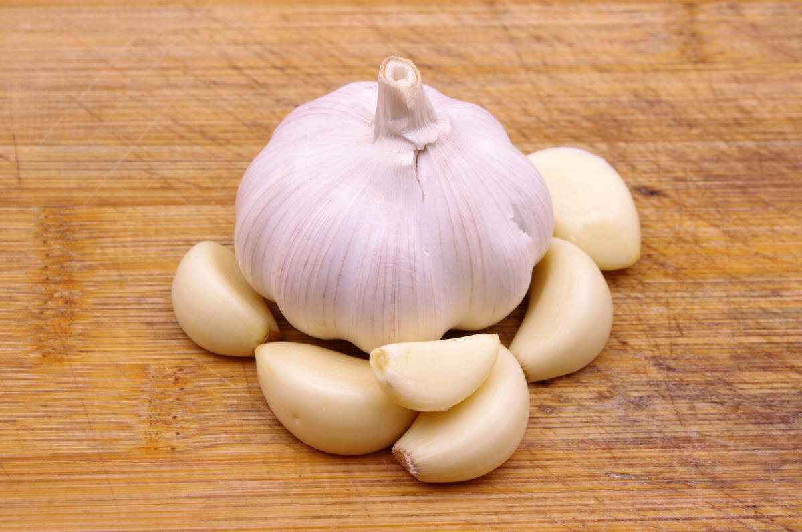

Sebagian besar manfaat bawang putih adalah karena kandungan belerang tinggi senyawa terbentuk ketika cengkeh hancur atau dikunyah. Yang paling terkenal adalah allicin. Menurut para ilmuwan dari Jerman, allicin dengan cepat diserap di jalur pencernaan saluran pencernaan dan menyebar ke seluruh tubuh, memiliki banyak efek biologis: dari normalisasi metabolisme ke pencegahan penyakit ganas neoplasis. Hal ini penting untuk dicatat bahwa allicin adalah senyawa yang sangat tidak stabil yang hadir terutama di bawang putih segar dan hanya untuk waktu singkat setelah clove telah dihancurkan atau hancur. Bawang putih mengandung banyak zat berharga lainnya, vitamin dan mineral. Isinya kandungan kalori yang cukup tinggi: 1 clove (sekitar 6-8 gram) berisi 42 kalori.
